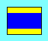
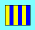
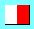
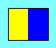
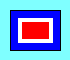
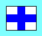
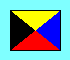
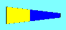
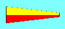

Office Signal Flag Code
Version 0.2.4 22 May 1998
Additions and suggestions to chris [whirlpool] muppetlabs [spot] com
General Notes
With the ten numeral flags and the 3 substitute flags, one can create
any 4-digit number. The proof is left for the student.
It was my thought that the flags would indicate a general status rather
than be a way of communicating a specific message to a specific person.
TEE2 has proposed some definitions in the latter category, and I see no
reason that a flag can't have a separate meaning when you hit someone
in the face with it. So i've marked "status" and "immediate" below.
Definition sources are now attributed. Don't be afraid of overloading
a flag right now, if you feel strongly about the association of flag
and definition. We'll sort it out in Version 1.0 :-)
Hmm. out of single letter definitions already. Ideas on combining
similar notions into 2-letter codes, anyone? Perhaps a whole set of
personailty traits and moods could be combined under B
Flag blazons have been written and stored in alt tags so text browser
can have a clue what the flags look like. Terms are almost standard
heraldic. I've tried to keep blazons simple, omitting unnecessary
points of differencing.
- ?
- (status) i'm listening to music now, and will impale anyone who disturbs me. (IJ89)
- ?
- (status) i just got off the phone/out of a meeting/done talking with someone who needs to be killed, and will transfer that rage to the next person who bothers me with an idle or inane request. (IJ89)
- ?
- (status) there are no problems in the world, i would welcome your polite requests for my time. (IJ89)
- ?
- (status) i have X tasks in the queue (X indicated by the trailing number) (implies that any further requests will go on the end of the queue). (IJ89)
- ?
- (status) i require human interaction (may be covered by "i'm lonely"). (IJ89)
- ?
- (status) i've left early today due to excesses of stress. (may imply, "please don't add any more when i return") (IJ89)
- (immediate)I'm leaving due to excess of stress (IJ89)
 A (I have a diver down; I am undergoing a speed trial)
A (I have a diver down; I am undergoing a speed trial)
- (status) I'm working as fast as I can (CO149)
 B (I am taking on or discharging explosives)
B (I am taking on or discharging explosives)
- (status) I'm in a real shitty mood (CO149)
 C (Affirmative)
C (Affirmative)
- (immediate) Yes (CO149)
-  D (keep clear of me, I am maneuvering with difficulty)
- (status) don't mess with me right now, i'm doing something intense (CO149)
 E (I am altering my course to starboard)
E (I am altering my course to starboard)
- (status) I'm cleaning up someone else's mess (CO149)
 F (I am disabled, communicate with me; flight operations underway)
F (I am disabled, communicate with me; flight operations underway)
- (status) I'M LONELY! (CO149)
-  G (I require a pilot)
- (immediate) HELP! (CO149)
-  H (I have a pilot on board)
- (immediate) I've got it under control, or, someone else is already taken care of that (TEE2)
 I (I am altering my course to port; i am coming alongside)
I (I am altering my course to port; i am coming alongside)
- ***
 J (I am fire and have dangerous cargo)
J (I am fire and have dangerous cargo)
- (immediate) Read Your Email! (CO149)
-  K (you should stop, I have something important to communicate)
- (immediate) Don't even *think* of going *there*! (TEE2)
 L (you should stop your vessel instantly)
L (you should stop your vessel instantly)
- (immediate) Let's have a meeting (CO149)
- (status) I'm in a meeting (CO149)
 M (My vessel is stopped; I have a doctor on board)
M (My vessel is stopped; I have a doctor on board)
- (status) non-employee in area. hide the trade secrets (CO149)
 N (Negative)
N (Negative)
- (immediate) No (CO149)
 O (man overboard)
O (man overboard)
- (status) I'm out of the office (CO149)
- O: by itself, interpret as "out until the next time i'd normally be at work." (CO149)
- OL: Out to lunch (CO149)
- O[number]: Out, will be back at indicated hour (CO149)
- ON: out, will be back at beginning of next business day (CO149)
- OV: out on vacation. 4-digit date of return may be appended. (CO149)
- OW: out for coffee (see W below) (CO149)
 P (Crew return to ship; your lights are out or burning badly)
P (Crew return to ship; your lights are out or burning badly)
- (immediate) you want *what*? (CO149)
 Q (all boats return to ship; ship meets health regs, request port clearance)
Q (all boats return to ship; ship meets health regs, request port clearance)
- (immediate) just let me get on with it (CO149)
 R (Preparing to replenish; ready duty ship)
R (Preparing to replenish; ready duty ship)
- (immediate) I'm O.K. with your idea for *now*, but retain the right to deny my involvement later. (TEE2)
 S (conducting flag hoist drill; my engines are going full speed astern)
S (conducting flag hoist drill; my engines are going full speed astern)
- (status) boy am I screwing up today! or I am working to right past wrongs (CO149)
 T (do not pass ahead of me; Keep clear, trawling)
T (do not pass ahead of me; Keep clear, trawling)
- (immediate) "Hold on" (when on the phone, talking with a yahoo, etc.) (TEE2)
 U you are standing into danger
U you are standing into danger
- (immediate) For use after posting the K flag - OK, you went *there*, now pay the price! (TEE2)
 V (I require assistance)
V (I require assistance)
- (immediate) I require assistance (CO149)
-  W (I require medical assistance)
- (immediate) would someone get me a coffee? (CO149)
-  X (stop carrying out your intentions and watch for my signals)
- (immediate) Shut up and listen to me! (TEE2)
 Y (ship has visual communications duty; I am dragging anchor)
Y (ship has visual communications duty; I am dragging anchor)
- (status) i on the first pass over my email / trying to get through the morning setting up exercises (CO149)
-  Z (I require a tug)
- (punctuation) Local code additions. These aren't dictated by standard, local offices should define these. Following are some suggestions and examples of how to use this block.
- ZD: (status) The W4R3Z partition is full. Please delete files. (CO149)
- ZT: (status) It is all about T! (TEE2)
- ZT: (immediate) It is all about T! (TEE2)
 Code (Specifies the following in an international signal; message understood; decimal point)
Code (Specifies the following in an international signal; message understood; decimal point)
- (punctuation) Break between unrelated signals (CO149)
 0 ()
0 ()
- ***
 1 ()
1 ()
- ***
 2 ()
2 ()
- ***
 3 ()
3 ()
- ***
 4 ()
4 ()
- ***
-  5 ()
- ***
 6 ()
6 ()
- ***
-  7 ()
- ***
 8 ()
8 ()
- ***
 9 ()
9 ()
- ***
 substitute 1 (Absence of flag officer or unit commander)
substitute 1 (Absence of flag officer or unit commander)
- repeat 1st digit in number
 substitute 2 (absence of chief of staff)
substitute 2 (absence of chief of staff)
- repeat 2nd digit in number
 substitute 3 (Absence of commanding officer)
substitute 3 (Absence of commanding officer)
- repeat 3rd digit in number